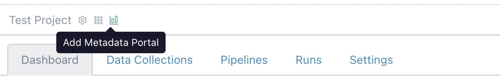
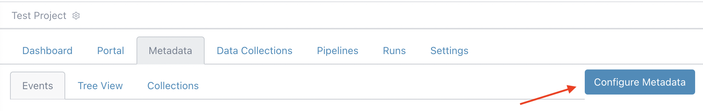
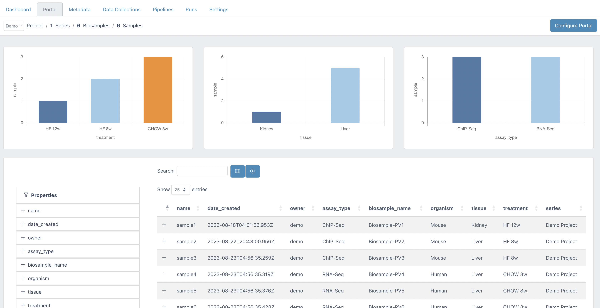
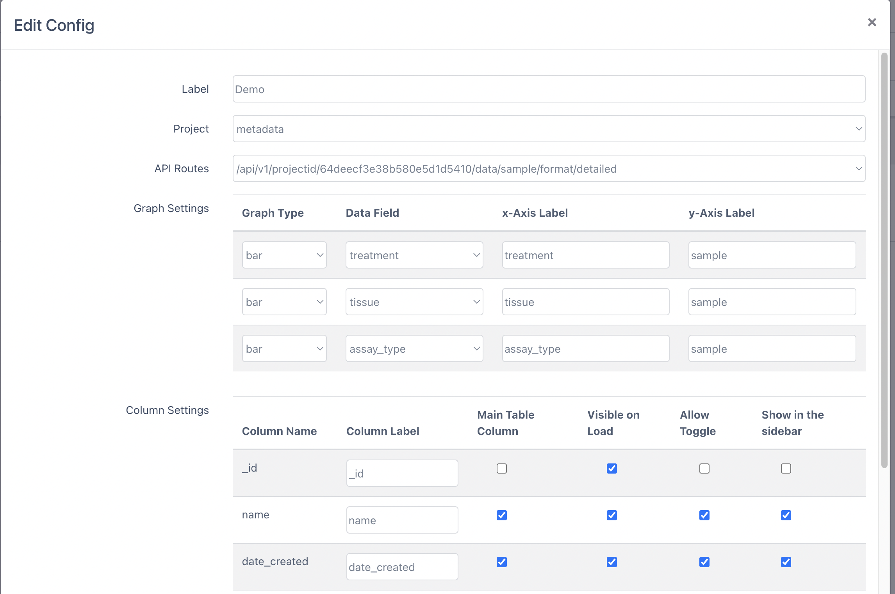

Metadata Portal
Expected learning outcome
To understand the basics of Metadata Portal.
Before you start
Please go to https://www.viafoundry.com and login into your account. If you have an issue about login, please let us know about it (support@viascientific.com). We will set an account for you.
Adding Metadata Portal
Once logged in, first complete Metadata Tracker - Basics Tutorial. After that Click on the Add Metadata Portal icon to add a new Portal tab into your project.

To visualize Metadata information, we need to define two API routes in the Metadata Tracker Section. To start configuring API routes click on the Metadata tab and "Configure Metadata" button at the right.

Configuring Metadata Tracker
- In this configuration section, click on
API Configtab and Click Insert Button. -
Add Samples Route and its Required Fields
- Target Collection: sample
- Route Description: detailed
- Config: Click New Collection Group, Select
SamplesCollection and add the following required fields. You might choose to add other fields to visualize in Portal.
Collection: Samples
Field Rename _id (required) _id creationDate (required) date_created Name (required) name owner owner Assay Type assay_type - Click
New Collection Group, SelectBiosamplesCollection and add the following fields.
Collection: Biosamples
Field Rename Name (required) biosample_name Organism organism Tissue tissue Treatment treatment - Click
New Collection Group, SelectSeriesCollection and add the following fields.
Collection: Series
Field Rename Name (required) series -
Click
Save API configbutton to create/api/v1/projectid/${project_id}/data/sample/format/detailedAPI route. -
Add File Route and it's Required Fields
- Target Collection: file
- Route Description: summary
- Config: Click
New Collection Groupand selectFilesCollection and add the following required fields.
Collection: Files
Field Rename _id (required) _id Name name owner owner Used Files file_used Directory file_dir Archive Directory archive_dir S3 Archive Directory s3_archive_dir Google Storage Archive Directory gs_archive_dir Collection Type collection_type File Type file_type creationDate date_created - Click New Collection Group, Select
SamplesCollection and add the following fields.
Collection: Samples
Field Rename _id (required) sample_id Click New Collection Group, Select
SeriesCollection and add the following fields.Collection: Series
Field Rename Name collection_name (required) Name project_name (required) -
Click
Save API configbutton to create/api/v1/projectid/${project_id}/data/file/format/summaryAPI route.
Portal Configuration
To visualize the Metadata in Portal, you need to configure the retrieved API data from Metadata Tracker.

- Click the
Configure Portalbutton at the top right and then click theAdd Configbutton - Choose a project
- Choose Sample API route: e.g. (
/api/v1/projectid/${project_id}/data/sample/format/detailed) - Graph Settings: Choose three fields and labels that you want to visualize on the three bar graphs.
-
Column Settings:
- Column Label: You might rename the received data column name here.
- Main Table Column: Check the checkbox if you want to show the data in the main Portal table.
- Visible on Load: Check the checkbox if you want to show column data on the initial load of the page.
- Allow Toggle: Add field into Toggle section so user might show/hide that column.
- Show in the sidebar: Show field in the left sidebar.
-
Column Order: You might change the Main Portal column order here by drag and drop.

Congratulations! You have configured a metadata portal for your project!